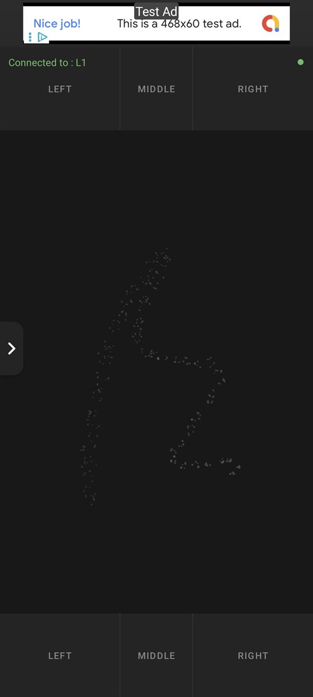
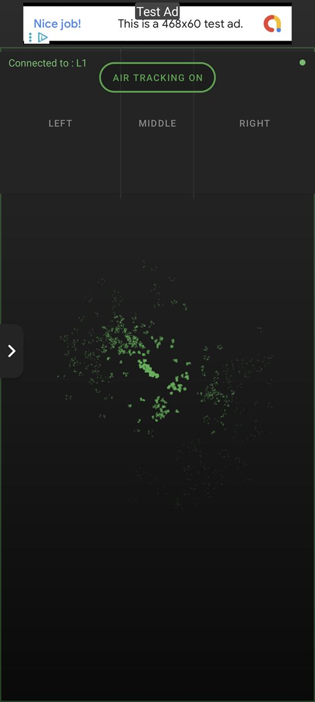
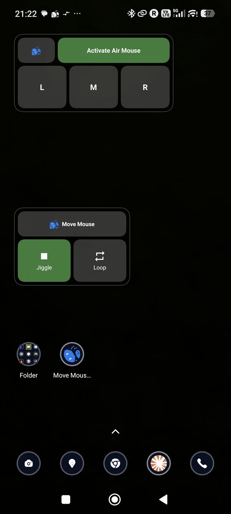
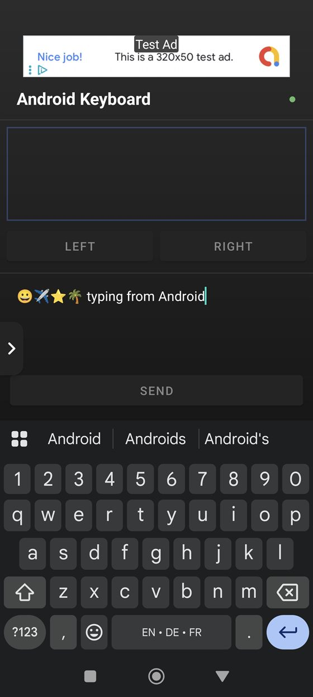
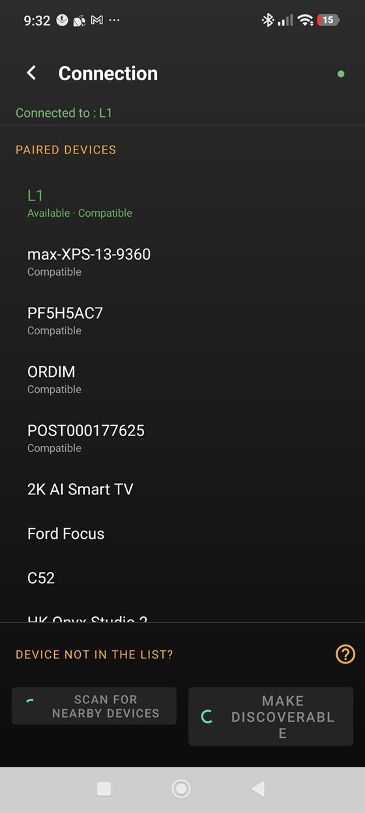

MoveMouse is a free Bluetooth mouse app that lets your phone control any computer wirelessly. Because it speaks the standard Bluetooth HID protocol, your PC sees it as a normal mouse and keyboard — there's nothing to install on the computer. Use the touchpad, tilt your phone as an air mouse, type with a full keyboard, or run the built-in mouse jiggler to keep your machine awake.





Everything your phone can control
Wireless touchpad
Use your phone screen as a precision trackpad. Single-tap to click, two-finger gestures for scrolling, and dedicated left, middle and right mouse buttons.
Air mouse
Point and move the cursor by tilting your phone in the air — great for presentations and couch-to-TV control. Adjustable speed and dead zone.
Mouse jiggler
Keep your PC awake with automatic, randomised cursor movement. Prevents sleep, screensavers and idle "away" status. Runs silently in the background or from a widget.
Bluetooth keyboard
Type on your computer from your phone. Custom PC keyboard with 23 international layouts, plus native Android keyboard and emoji support.
Special keys & shortcuts
Send function keys, media controls, arrow keys and modifier combos like Ctrl+C, Alt+Tab and Ctrl+Alt+Del.
Macro recording
Record sequences of mouse and keyboard actions and replay them, with optional looping and configurable timing.
A mouse jiggler built right in
Need to keep your computer awake without touching it? MoveMouse doubles as a mouse jiggler (also called a mouse mover or mouse wiggler). Switch on Random Movement and your phone gently nudges the PC cursor at an interval you choose, so the screen never locks, the status never flips to idle, and downloads or long-running tasks keep going. Because the movement comes from a real Bluetooth HID device, the computer can't tell it apart from a physical mouse — and you can trigger it instantly from a home-screen widget, no app launch needed.
How it works
- Install MoveMouse on your Android phone from Google Play.
- Make your phone discoverable and pair it from your PC's Bluetooth settings — just like adding any Bluetooth mouse.
- Start controlling. Use the touchpad, air mouse, keyboard or jiggler. Your last device is remembered, so it reconnects automatically next time.
Requirements
Frequently asked questions
Is MoveMouse a free Bluetooth mouse app?
Yes. MoveMouse is free to download and use on Google Play. It's supported by ads, which can be removed with a one-time in-app purchase.
Do I need a dongle, server software or drivers?
No. MoveMouse connects over the standard Bluetooth HID profile, so your computer treats the phone like an ordinary Bluetooth mouse and keyboard. You pair once from your PC's Bluetooth settings — there's nothing to install on the computer.
What is a mouse jiggler, and how does MoveMouse work as one?
A mouse jiggler keeps a computer awake by moving the cursor automatically so it never goes idle. MoveMouse has one built in: turn on Random Movement (or tap the home-screen widget) and your phone nudges the PC cursor on a schedule you control, preventing sleep, screensavers and away status.
Which devices does MoveMouse work with?
Any device that supports Bluetooth HID: Windows PCs, Macs, Linux computers, and many smart TVs and consoles. Your phone needs Android 10 or later with Bluetooth.
Can I use my phone as a Bluetooth keyboard too?
Yes. MoveMouse sends real keystrokes over Bluetooth. Type with the on-screen PC keyboard (23 international layouts), use your phone's native keyboard, or send function keys, media controls and shortcuts like Ctrl+C from the Special Keys screen.
Contact & support
Having trouble connecting? Use the in-app troubleshooting guide or reach us at:
contact@coolartifacts.io